トリスタンガイド - タリスマン、スキル、チーム |ヒーローウォーズ・アライアンス
- 著者：アレクサンドル・ドミンゴス。 .
トリスタンは、最初は単純そうに見えますが、突然戦い全体のリズムを決定する前線の戦士の一人です。彼は物理的な味方にバフを与え、エネルギーを消費し、伝説のレリックをアップグレードした後、敵の術者が息をする前に罰するために沈黙を追加します。
ヒーローウォーズ・アライアンス のトリスタン ガイドでは、彼のタリスマンが彼の戦闘計画をどのように変えるのか、なぜ祝福のタリスマンが通常より賢明な選択であるのか、そしてどのスキルが最初にレリック投資に値するのかを説明します。
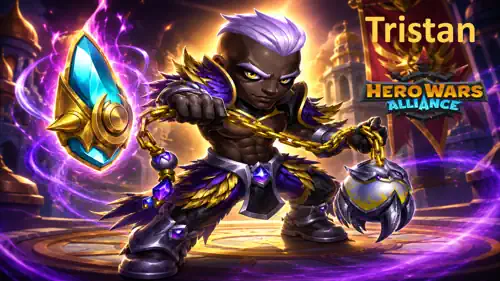
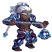
トリスタンの目次
- トリスタンとは？
- トリスタンの総合評価
- トリスタンの長所と短所
- タリスマン最大ステータスの比較
- トリスタンのタリスマン ガイド
- レジェンダリーレリックスキルアップグレードの優先順位
- トリスタンのベストスキン
- アーティファクトの進化優先度
- グリフ進化の優先順位
- トリスタンに対抗する方法
- トリスタンシナジー
- トリスタンのベストチーム
- アレクサンドルの最終評決
ヒーローウォーズ・アライアンス の トリスタン とは何者ですか?
トリスタンは最前線で戦う名誉の道の戦士です。彼の役割は、物理攻撃を強化し、祝福されたヴァンガードを通じてエネルギーを供給し、魔法の貫通に依存する敵をターゲットにすることで、物理チームをより速く、より鋭い脅威に変えることです。
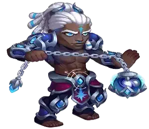
- メインクラス: 戦士
- 役割： 戦士
- 位置： 最前線
- 主なステータス: 強さ
- 派： 名誉の道
- レルムバフ: 歩兵の攻撃力/防御力 120%
- レルムスキル: 現在のデータでは利用できません。
- ソウルストーンの入手方法： 現在のデータには記載されていません。
- 相乗効果: クロウ、オーヤ、ファフニール、ヤスミン、アルテミス
- ヒドラのティアリスト: 現在のデータでは評価されていません。
トリスタンをエキサイティングにしているのは、良いポジショニングにどれだけ報われるかです。彼の前にいる味方は正義の熱意の恩恵を受けますが、適切なヒーローが彼の前に立ってエネルギーを獲得し続けると、彼のエネルギーエンジンはより強力になります。
伝説のレリックを使用すると、トリスタンは単なるアーマー貫通サポート以上の存在になります。浄化者の怒りと報復の印章は沈黙を付与します。だからこそ、クロウ、オヤ、ヤスミン、アルテミスを中心とした物理攻撃チームに編成すると、トリスタンは非常に危険な存在になります。
トリスタンの長所と短所 - ヒーローウォーズ・アライアンス
長所
- 装甲貫通力とテンポを必要とする物理チームとの優れた相乗効果。
- 正義の熱意はトリスタンと彼の目の前の同盟者を強化し、強力なバーストウィンドウを実現します。
- 魔術師の審判はエネルギーを消費し、同盟を結んだ 名誉の道 ヒーローとスケールします。
- 伝説のレリックには沈黙が追加され、メイジやサポートチームに対してはるかに強くなります。
- 優れたパートナーには、オヤ、クロウ、ファフニール、ヤスミン、アルテミス が含まれます。
短所
- いくつかの効果が目の前の味方を考慮するため、適切なチーム形態が必要です。
- 彼の最高のコントロールは、伝説のレリックのアップグレード後にのみ得られます。
- 自給自足には限界があります。彼はチームの増幅者としてさらに輝ける。
- 罪人の報いは強力ですが、実際にターゲットのアーマーを上回るダメージを与えられるかどうかに依存します。
トリスタン - タリスマン最大ステータスの比較
| ステータス | 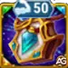 タリスマン 1 正義 |
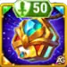 タリスマン 2 祝福 |
|---|---|---|
 知能 知能 | 3,944 | 3,944 |
 機敏性 機敏性 | 3,823 | 3,823 |
 強さ 強さ | 17,488 | 15,488 |
 健康 健康 | 1,545,175 | 1,283,675 |
 物理攻撃 物理攻撃 | 114,529 | 125,729 |
 魔法攻撃 魔法攻撃 | 27,258 | 27,258 |
 鎧 鎧 | 37,941.2 | 51,741.2 |
 魔法防御 魔法防御 | 22,863.8 | 22,863.8 |
 靭性 靭性 | 782 | 782 |
 装甲貫通力 装甲貫通力 | 37,396 | 37,396 |
 粉砕 粉砕 | 8,863 | 8,863 |
トリスタンのタリスマン ガイド ヒーローウォーズ・アライアンス
トリスタンには2つのタリスマンがあり、戦闘中にボーナスを付与するのは装備したタリスマンだけなので、この選択は重要です。正義のタリスマンは耐久力を大幅に高めます。一方、祝福のタリスマンはアーマーと物理攻撃を増加させ、トリスタンの全スキルに含まれる物理攻撃の計算式を強化します。
ほとんどの戦闘では、祝福のタリスマンがおすすめです。トリスタンの価値は、戦闘テンポ、沈黙による圧力、エネルギーの連携、そして物理攻撃チームがアーマーを突破するための支援にあります。追加の物理攻撃によって、浄化者の怒り、正義の熱意、魔術師の審判、報復の印章のダメージやバフ効果がさらに強力になります。
1 - 正義のタリスマン
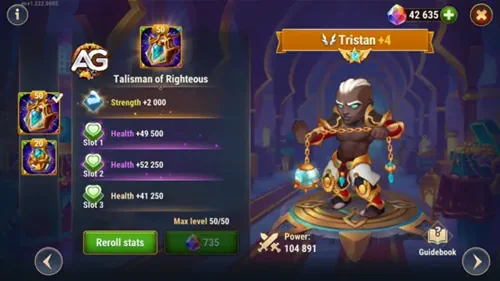
メインスロットは 力+2,000。トリスタンの主なステータスは筋力なので、つまり 体力+80,000 そして 物理攻撃力+2000。リロールスロットは体力なので、3 つのスロットを合計すると 体力 +181,500.
1 - 正義のタリスマン |
メインステータス合計 | 派生ボーナス |
|---|---|---|
強さ |
+2,000 | 体力+80,000 物理攻撃力+2000 |
| スロット1 | スロット2 | スロット3 | 合計リセマラボーナス |
|---|---|---|---|
体力 +60,500 |
体力 +60,500 |
体力 +60,500 |
体力 +181,500 |
2 - 祝福のタリスマン
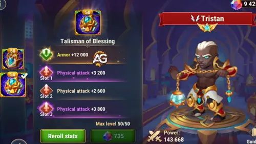
メインスロットは アーマー+12,000。リロールスロットは物理攻撃を与え、一緒に追加します 物理攻撃力 +13,200。これは、彼の公式が物理攻撃に直接対応するため、ほとんどの攻撃的なトリスタンチームに推奨するタリスマンです。
2 - 祝福のタリスマン |
メインステータス合計 |
|---|---|
鎧 |
+12,000 |
| スロット1 | スロット2 | スロット3 | 合計リセマラボーナス |
|---|---|---|---|
物理攻撃力+4,400 |
物理攻撃力+4,400 |
物理攻撃力+4,400 |
物理攻撃力 +13,200 |
アレクサンドルのヒント: チームが動き始める前にトリスタンが瀕死の場合は、正義のタリスマンを使用してください。彼が十分に長く生き残れば、祝福のタリスマンは彼のスキルを重要にする物理攻撃の計算式を上昇させるため、より良い戦闘効果をもたらします。
トリスタン伝説のレリックスキルアップグレードの優先順位 - ヒーローウォーズ・アライアンス
トリスタンのレリックのアップグレードにより、沈黙、エネルギー共有、装甲貫通効果が追加され、彼のサポート キットが深刻で高速な前線プレッシャーに変わります。
レリックは、既存の能力を強化しながら新しい能力を与えることでヒーローに力を与えます。トリスタンにとって最大のアップグレードは、沈黙を追加したり、チームを動かし続けるエネルギーの流れを改善したりすることです。
0 - 基本攻撃
ゲーム内の説明: トリスタンの通常攻撃は物理ダメージを与えます。
スキル説明： トリスタンの定番ヒット曲です。ウォリアークラスのグリフ効果は通常の攻撃に報酬を与えることができ、ダメージはクリーンなので、見た目よりも重要です。 物理攻撃力100%.
タリスマンの配合 1: 正義のタリスマン
- 式 1: 物理的ダメージ: 114,529 (物理攻撃力100%)
タリスマン付きフォーミュラ2：祝福のタリスマン
- 式 1: 物理的ダメージ: 125,729 (物理攻撃力100%)
スキルアニメーション情報
- クールダウン： 5秒
- アニメーションの遅延: 1.01秒
- ダメージタイプ: 物理的損傷
進化優先度： 中くらい - 基本的な攻撃は彼のリズムをサポートしますが、レリック リソースはまず沈黙、エネルギー値、またはより強力なチーム プレッシャーを追加するスキルに投入される必要があります。
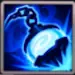
1 - 浄化者の怒り
ゲーム内の説明: トリスタンは近くの敵を攻撃し、物理ダメージを与えます。
スキル説明： これはトリスタンの近くの敵の攻撃です。基本バージョンは直接的で読みやすいです。 物理ダメージ (物理攻撃力 25% + 9000)。伝説のレリックに沈黙が追加されると、その重要性はさらに高まります。
タリスマンの配合 1: 正義のタリスマン
- 式 1: 物理的ダメージ: 37,632.25 (物理攻撃力25% + 9000)
タリスマン付きフォーミュラ2：祝福のタリスマン
- 式 1: 物理的ダメージ: 40,432.25 (物理攻撃力25% + 9000)
スキルアニメーション情報
- ダメージタイプ: 物理的損傷
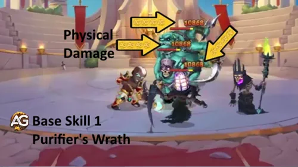
進化優先度： 高い - これはトリスタンの最初のダメージスキルであり、彼の最も重要な伝説のレリックの改良のベースとなるため、アップグレードしてください。
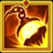
1 - 浄化者の怒り (強化スキル) 伝説のレリック: レベル 10
ゲーム内の説明: このスキルは近くの敵に 4.0 秒間沈黙を適用し、与えるダメージが増加します。
スキル説明： ここがピューリファイアーの怒りの恐ろしさです。ダメージは25%から2倍になります。 物理攻撃力50% +18000、4.0秒の沈黙により、戦闘の先頭で敵のスキルタイミングを止めることができます。
タリスマンの配合 1: 正義のタリスマン
- 式 1: 物理的ダメージ: 75,264.5 (物理攻撃力50% + 18000)
タリスマン付きフォーミュラ2：祝福のタリスマン
- 式 1: 物理的ダメージ: 80,864.5 (物理攻撃力50% + 18000)
スキルアニメーション情報
- キーワード: 沈黙
- 間隔： 4秒
- ダメージタイプ: 物理ダメージ、コントロール、沈黙
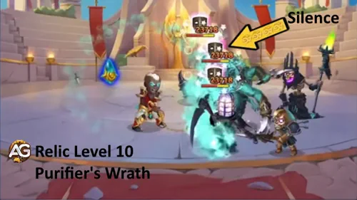
進化優先度： 非常に高い - これは、ダメージ計算式を増加させながら実際のコントロールを追加するため、トリスタンの最高のレリックアップグレードの 1 つです。
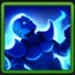
2 - 正義の熱意
ゲーム内の説明: 5.0秒間、トリスタンは自分自身と目の前の味方の物理攻撃力を増加させます。
スキル説明： トリスタンがフィジカルチームでとても気分が良い理由は、正義の熱意です。それは物理攻撃ボーナスを与えます 物理攻撃力20% +4800 トリスタンと彼の前にいる味方に影響を与えるため、位置によってどれだけの価値が得られるかが決まります。
タリスマンの配合 1: 正義のタリスマン
- 式 1: 物理攻撃ボーナス: 27,705.8 (物理攻撃力20% + 4800)
タリスマン付きフォーミュラ2：祝福のタリスマン
- 式 1: 物理攻撃ボーナス: 29,945.8 (物理攻撃力20% + 4800)
スキルアニメーション情報
- キーワード: バフ
- 間隔： 5秒
- 対象: トリスタンと彼の目の前の仲間たち
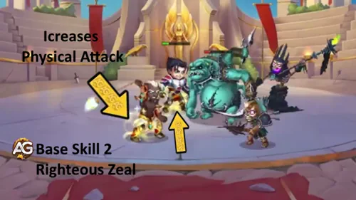
進化優先度： 高い - これは、特にトリスタンがヤスミン、アルテミス、オーヤ、または追加の攻撃をすぐに使用できる他の物理的な味方とペアになっている場合に、コアチームのバフになります。
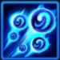
3 - 魔術師の審判
ゲーム内の説明: トリスタンは最も高い魔法貫通力を持つ敵、またはそうでない場合は最も遠い敵を攻撃します。各ヒットは物理ダメージを与え、ターゲットのエネルギーの一部を燃焼します。このスキルは、味方の 名誉の道 ヒーローごとに 1 回発動します。
スキル説明： このスキルは 1 ヒットあたりの量は小さいですが、味方の 名誉の道 ヒーローごとに繰り返されるため、すぐに迷惑になる可能性があります。ダメージ計算式は 物理攻撃力5% +3000、そして各ヒットが燃えます 100 エネルギー.
タリスマンの配合 1: 正義のタリスマン
- 式 1: 物理的ダメージ: 8,726.45 (物理攻撃力5% + 3000)
- 式 2: 消費エネルギー: 100 エネルギー
タリスマン付きフォーミュラ2：祝福のタリスマン
- 式 1: 物理的ダメージ: 9,286.45 (物理攻撃力5% + 3000)
- 式 2: 消費エネルギー: 100 エネルギー
スキルアニメーション情報
- キーワード: エネルギーの燃焼、名誉の道
- ターゲティング: 魔法貫通力が最も高い敵、または魔法貫通力が無い場合は最も遠い敵
- トリガー： 味方の 名誉の道 ヒーローごとに 1 回
- ダメージタイプ: 物理的ダメージ、エネルギー燃焼
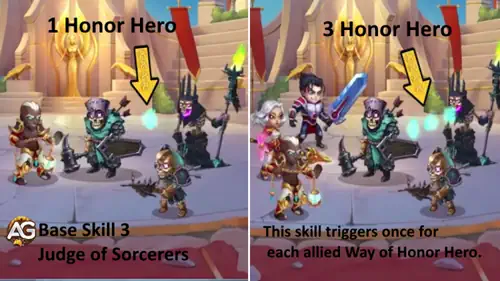
進化優先度： 高い - ダメージは主な賞品ではありません。エネルギー燃焼と 名誉の道 のスケーリングにより、適切なチームでこのスキルが重要になります。
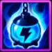
4 - 祝福された前衛
ゲーム内の説明: トリスタンの前の味方がエネルギーを得るたびに、トリスタンも同じ量を獲得します。トリスタンは、彼と一緒に戦闘を開始したヒーローからのみボーナス エネルギーを獲得できます。
スキル説明： ブレスド ヴァンガードはトリスタンのエンジンです。ここには固定ダメージの計算式はありません。この価値は、頻繁にエネルギーを獲得する前にいる味方とトリスタンをマッチングさせることで得られ、トリスタンが最も強力なアクションをより速くサイクルできるようになります。
スキルアニメーション情報
- タイプ： パッシブ、エネルギーゲイン
- 状態： トリスタンの前にいる味方がエネルギーを得る
- 注記： ターゲットのレベルが120を超える場合、味方からエネルギーを得る確率は低くなります。
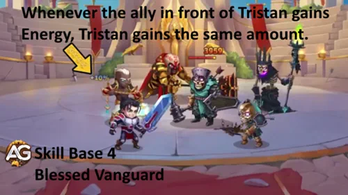
進化優先度： 非常に高い - これがトリスタンが機能する最大の理由の 1 つです。より多くのエネルギーは、より多くのプレッシャー、より多くのスキルキャスト、そしてフィジカルチームのテンポの向上を意味します。
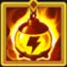
4 - ブレスド ヴァンガード (強化スキル) 伝説のレリック: レベル 20
ゲーム内の説明: 戦闘開始時に物理攻撃力が魔法攻撃力より高い味方は、トリスタンがこのスキルから受け取るエネルギーの 30% を獲得するようになりました。
スキル説明： この強化により、トリスタンの個人的なエネルギー獲得がチームのテンポツールに変わります。物理的な味方が受け取るようになりました エネルギーの 30% トリスタンはブレスド ヴァンガードから受け取ります。これはまさにバースト物理チームが望んでいることです。
タリスマンの配合 1: 正義のタリスマン
- 式 1: エネルギーの共有: ブレスド ヴァンガードから受け取ったエネルギーの 30%
タリスマン付きフォーミュラ2：祝福のタリスマン
- 式 1: エネルギーの共有: ブレスド ヴァンガードから受け取ったエネルギーの 30%
スキルアニメーション情報
- タイプ： パッシブ、エネルギー獲得、エネルギー共有
- 状態： 戦闘開始時に味方は魔法攻撃力よりも物理攻撃力が高くなければなりません
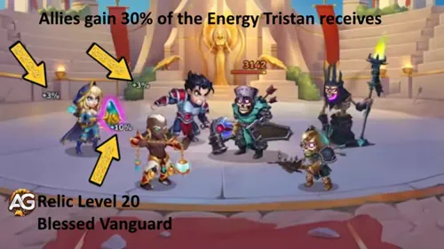
進化優先度： 非常に高い - エネルギー エンジンの恩恵を受けるのはトリスタンだけではなくなるため、これはチームの大幅なアップグレードです。
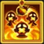
5 - 報復の封印 (新スキル) 伝説の秘宝: レベル 1
ゲーム内の説明: トリスタンは 11.0 秒ごとに、魔法貫通力が最も高い敵、または敵がいない場合は最も遠い敵、および近くの敵に 4.0 秒間の沈黙を適用します。スキルの影響を受けたヒーローも物理ダメージを受けます。
スキル説明： 報復の印章は、11.0秒ごとに沈黙を付与できるようになるため、トリスタンにとって非常に大きな強化です。さらに、物理ダメージ（物理攻撃の80%）を与えるため、祝福のタリスマンを装備するとこの攻撃も強化されます。
タリスマンの配合 1: 正義のタリスマン
- 式 1: 物理的ダメージ: 91,623.2(物理攻撃力80%)
タリスマン付きフォーミュラ2：祝福のタリスマン
- 式 1: 物理的ダメージ: 100,583.2 (物理攻撃力 80%)
スキルアニメーション情報
- クールダウン： 11秒
- キーワード: 沈黙
- 間隔： 4秒
- ターゲティング: 魔法貫通力が最も高い敵、またはない場合は最も遠い敵、および近くの敵
- ダメージタイプ: 物理ダメージ、コントロール、沈黙
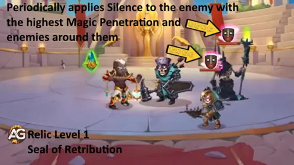
進化優先度： 非常に高い - これは最初の新しい伝説のレリックスキルであり、トリスタンのコントロール値を即座に変更します。 11 秒ごとの沈黙は遅らせるにはあまりにも便利です。
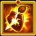
6 - 罪人の報い（新スキル）伝説のレリック：レベル30
ゲーム内の説明: トリスタンまたは彼の味方がターゲットのアーマーを貫通すると、敵はアーマー値を超えたダメージ部分に等しい追加ダメージを受けます。
スキル説明： これは、鎧破壊チームに対するトリスタンの後期レリックの代償です。物理攻撃の合計は固定されていません。結果は敵のアーマーを超えるダメージの量に依存するためです。式は 物理ダメージ：アーマーを超えるダメージの200％.
タリスマンの配合 1: 正義のタリスマン
- 式 1: 条件付き物理ダメージ: アーマーを超えるダメージの200%
タリスマン付きフォーミュラ2：祝福のタリスマン
- 式 1: 条件付き物理ダメージ: アーマーを超えるダメージの200%
スキルアニメーション情報
- タイプ： パッシブ、物理的ダメージ
- 状態： トリスタンまたは彼の仲間がターゲットのアーマーを貫通する
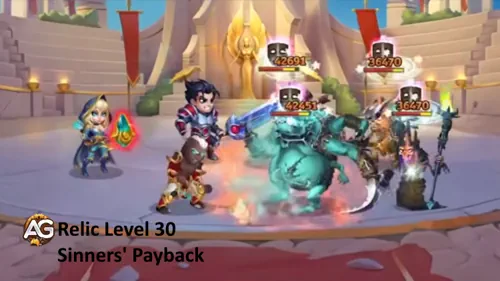
進化優先度： 高い - この効果は、特にアーマー貫通チームに対して強力ですが、報復の封印や祝福されたヴァンガードのエネルギー共有よりも条件付きです。
トリスタン ヒーローウォーズ・アライアンス のベストスキン
トリスタンの皮膚の優先順位は、最初に物理的圧力、次に装甲貫通、そして生存を中心に構築されているため、エネルギーと沈黙を供給し続けることができます。
デフォルトのスキン
統計: 体力+1,365。トリスタンの主なステータスは強さであるため、これにより、 体力 +54,600 そして 物理攻撃力 +1,365.
進化優先度： 高い - 強さはトリスタンにとって効率的です。それは、彼の公式に生存と追加の物理攻撃の両方を与えるためです。
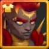
ソーラースキン+
統計: 物理攻撃力+14,190。アップグレードされたソーラー スキン + を取得すると、物理攻撃ボーナスが 2 倍になります。
進化優先度： 非常に高い - 浄化者の怒り、正義の熱意、魔術師の審判、報復の印章 はすべて物理攻撃でスケールするため、これは トリスタン の最強のスキンの 1 つです。
マスカレードスキン
統計: 魔法防御+10,650。
進化優先度： 中くらい - メイジのプレッシャーに役立ちますが、トリスタンのダメージ、バフの強さ、鎧の貫通計画は改善されません。
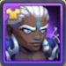
ステラスキン
統計: 装甲貫通力 +10,650。
進化優先度： 非常に高い - アーマー貫通はトリスタンの物理ダメージを高め、罪人の報いを活用する戦い方も強化します。
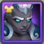
ダークデプススキン
統計: 装甲+10,650。
進化優先度： 中高 - トリスタンは最前線で戦うため、エネルギーエンジンが始動する前に物理チームがトリスタンを除去しようとする場合、アーマーは貴重です。
スポーツスキン
統計: 粉砕+5,920。
進化優先度： 高い - 粉砕により、体力が 50% 未満の敵に対するトリスタンのフィニッシュ プレッシャーが向上しますが、一貫性という点では物理攻撃と装甲貫通力にまだ劣ります。
トリスタンアーティファクト進化優先ヒーローウォーズ・アライアンス
トリスタンのアーティファクトは、彼のキットと同じ計画を推進します。つまり、物理チームの装甲貫通力、フォーミュラの物理攻撃、そして前線の持続力の強さです。
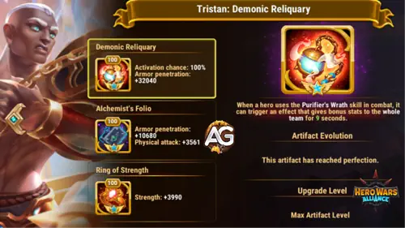
1番目のアーティファクト: 悪魔の聖遺物
効果： チーム全体の装甲貫通力 +32,040 (9 秒間)。発動確率: 100%。トリスタンのアルティメットスキルで発動。
進化優先度： 非常に高い - これは、特に味方が戦車を素早く突破しようとしている場合に、物理チームにとってトリスタンを非常に価値あるものにするアーティファクトです。
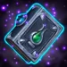
2番目のアーティファクト：錬金術師のフォリオ
効果： 装甲貫通力 +10,680、物理攻撃力 +3,561。
進化優先度： 非常に高い - それはトリスタンにまさに彼が望んでいたものを与えます：物理的ダメージのためのより多くの貫通力と彼の公式とチームバフのためのより多くの物理的攻撃。

3番目のアーティファクト: 力のリング
効果： 体力+3,990。トリスタンの主なステータスは強さであるため、これにより、 体力 +159,600 そして 物理攻撃力 +3,990.
進化優先度： 高い - 優れた長期スケーリングですが、武器と本は通常、チームの物理ダメージをより速く変更します。
トリスタングリフの進化優先度
トリスタンのゲーム内グリフの順序を維持しますが、物理攻撃の計算式、装甲貫通圧力、および前線での生存率を高める統計に最初に投資します。
1 番目のグリフ - 物理攻撃
レベル80の統計: 物理攻撃力+8,340。
進化優先度： 非常に高い - これにより、トリスタンの直接ダメージ、正義の熱意のバフ値、報復の封印のダメージが向上します。
2 番目のグリフ - 健康
レベル80の統計: 体力+122,800。
進化優先度： 中高 - トリスタンには、前線で生き続け、エネルギー エンジンを動かし続けるのに十分な体力が必要です。
3番目のグリフ - アーマー
レベル80の統計: 装甲+12,850。
進化優先度： 中くらい - 最前線で生き残るのに役立ちますが、物理攻撃や装甲貫通などのスキルプレッシャーは増加しません。
4 番目のグリフ - 装甲貫通
レベル80の統計: 装甲貫通力 +12,850。
進化優先度： 非常に高い - トリスタンはアーマー貫通のアイデンティティを持つ物理ヒーローであり、このグリフは彼のダメージがより強力な敵に対して適切な状態を維持するのに役立ちます。
5 番目のグリフ - 強さ
レベル80の統計: 体力+2,110。これにより、 健康 +84,400 そして 物理攻撃力 +2,110.
進化優先度： 高い - 生存力を向上させ、同時に物理攻撃を追加するため、トリスタンの強さが無駄になることはありません。
トリスタンヒーローウォーズ・アライアンスに対抗する方法

エレクトラは体力のみに鎧防御を持たないため、トリスタンの鎧貫通の効果は低くなります。

トリスタンはエネルギーのリズムを重視しているので、ヨルガンは強力な答えです。ヨルガンがエネルギーのテンポを遅くしたり方向を変えたりすると、トリスタンは適切なタイミングでプレッシャーを連鎖させるのが難しくなります。

ジュリアスはシールドでチームを守り、トリスタンの物理的な圧力を軽減できます。シールドを重視したチームは、罪人の報いとアーマー貫通が決定的な効果を発揮するまでの時間を引き延ばし、トリスタンにより多くの攻撃時間を使わせることができます。
ヒーローウォーズ・アライアンス の トリスタン シナジー

正義の熱意が物理攻撃を強化し、悪魔の聖遺物がバーストウィンドウのチームアーマーの貫通力を追加するため、アルテミスはトリスタンの物理的サポートを愛しています。

クロウはトリスタンの最もエキサイティングな遺物パートナーの 1 人です。トリスタンは浄化者の怒りと報復の封印によってさらに沈黙を追加し、クロウは沈黙の圧力を罰して延長します。
ファフニール

ファフニールは物理ダメージディーラーを保護し、より強力なダメージを与えるのを助けます。トリスタンは両方のヒーローが爆発的なフィジカルチームをサポートしているため、自然に彼の隣に収まります。

オーヤは弱い敵を前に引っ張ることができ、トリスタンはまさにそれを望んでいます。ターゲットが近づくと、トリスタンの近くの攻撃と装甲貫通支援がさらに脅威になります。

ヤスミンはトリスタンの物理攻撃サポートと鎧貫通アイデンティティの恩恵を受けます。オヤがターゲットを引き寄せ、トリスタンが物理的プレッシャーを高めることで、ヤスミンはより早くキルを確保できるようになります。
2026 年のトリスタンのベストチーム - ヒーローウォーズ・アライアンス
これらのトリスタン チームは、物理的圧力、沈黙値、およびターゲットの素早い崩壊を中心に構築されています。リストされている順序は、このガイドで使用されているソース チームの順序に従います。
チーム 1 の分析:
ケンドル、クロウ、ヤスミン、オヤ、トリスタンは危険な攻撃シェルを作成します。オーヤとヤスミンはターゲットに素早く圧力をかけ、クロウとトリスタンは沈黙を追加し、トリスタンの祝福のタリスマンは彼の公式により多くの物理攻撃を与えます。
| トリスタン - 2026 年のベストチーム #1 | ||||
|---|---|---|---|---|
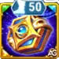 タリスマン 1 |
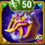 タリスマン 2 |
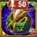 タリスマン 2 |
タリスマン 2 | |
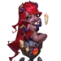 ケンドル |
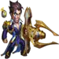 クロウ |
ヤスミン | 大谷 | トリスタン |
チーム 2 の分析:
クロウ、ヤスミン、オヤ、トリスタンが高いプレッシャーを維持する一方で、ガスはサステインと物理的なサポートを追加します。このバージョンは、物理的なコアが勢いを増す間、グース がチームの生き残りを支援するため、最初のバージョンよりも安全です。
チーム 3 の分析:
ファフニール、ケンドル、ガス、ヤスミン、トリスタンは、プロテクション、サステイン、物理バーストを組み合わせています。ファフニールとフースはチームの生き残りを支援し、ヤスミンとトリスタンはキルプレッシャーを与えます。
| トリスタン - 2026 年のベストチーム #3 | ||||
|---|---|---|---|---|
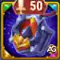 タリスマン 2 |
タリスマン 2 | タリスマン 2 | タリスマン 2 | |
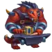 ファフニール |
ケンドル | ガス | ヤスミン | トリスタン |
トリスタン ヒーローウォーズ・アライアンス の最も人気のあるチーム
- ファフニール、アルテミス、トリスタン、ガラハッド、ルーサー
- ファフニール、アルテミス、トリスタン、ルーサー、クリーバー
- ジェット、セバスチャン、トリスタン、ガラハッド、クリーバー
- ファフニール、アルテミス、モジョ、トリスタン、ガラハッド
- ジェット、セバスチャン、トリスタン、ガラハッド、ルーサー
アレクサンドルの最終評決 - トリスタンヒーローウォーズ・アライアンス
トリスタンは、ソロキャリーとしてではなく、物理的なテンポヒーローとして使用した場合に最強です。彼の最高の戦いは、高速の物理攻撃バフ、鎧の貫通、エネルギーの共有、伝説のレリックによる沈黙の圧力によってもたらされます。
私の最終的な判断は単純です。ほとんどの戦いで祝福のタリスマンを備えたトリスタンを構築し、ソーラースキン+、ステラスキン、悪魔の聖遺物、錬金術師のフォリオ、物理攻撃、装甲貫通、そして沈黙またはエネルギーレリックのアップグレードを優先します。彼が生き残れば、あなたの物理的なチームを止めるのははるかに難しくなります。
彼のレリック能力をクロウと組み合わせて、戦闘での影響を最大化してください。
あなたの意見を残してください！
トリスタンガイドは気に入りましたか?理解できなかった点、または変更を提案したい点はありますか? アレクサンドレ・ゲームズ のコメント セクションに参加して、意見、疑問、提案を共有してください。
開始するには、下のボタンをクリックしてください。